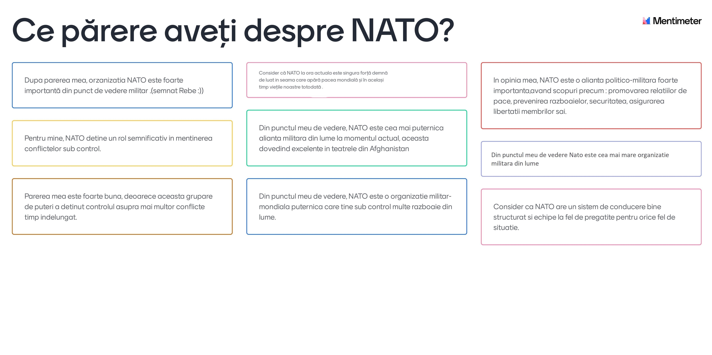

NATO
Get the latest updates
Organizația Tratatului Atlanticului de Nord, numită și Alianța Atlanticului de Nord, este o alianță militară interguvernamentală între 28 de țări europene și 2 țări din America de Nord. Organizația pune în aplicare Tratatul Atlanticului de Nord, semnat la 4 aprilie 1949.
Home
Informatii
Media
Pareri

© 2021 Copyright Vânătorii de Munte